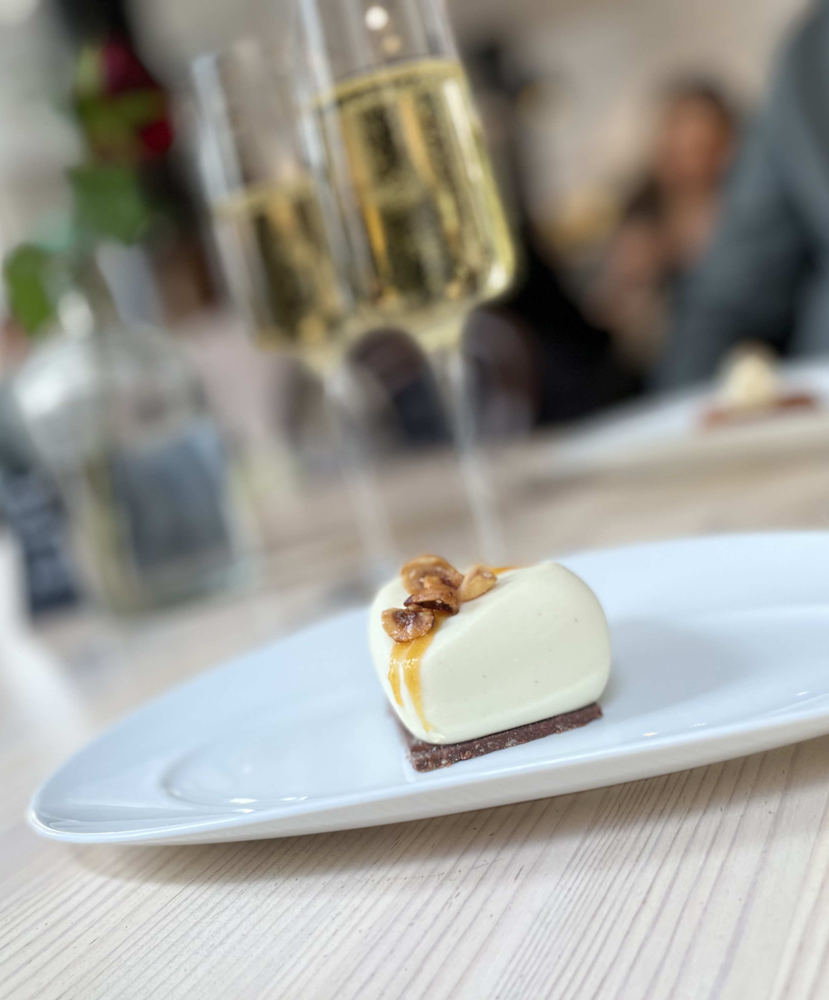

RÄKSMÖRGÅS MED TILLBEHÖR
- Vår goda räksmörgås med ägg, dillyoghurt och syrad rödlök på grovt bröd.
- Ett glas vin, en öl eller alkoholfritt allternativ.
- Dessertbakelse och kaffe.
Alternativt vegetarisk eller vegansk smörgås efter överenskommelse.
Pris 349 kr
SOPPBUFFÉ
- Svamp, jordärtskocka eller rostad paprikasoppa (samma för hela sällskapet).
- Färskt bröd, kex, Brie de Meaux, Comte’, lagrad Cheddarost samt kallskuret och sallad.
- Dessertbuffé med tre små dessertbakelser och tryfflar.
- Kaffe
Alternativt vegansk soppa.
Pris 349 kr

SKRÄDDARSY DIN KVÄLL
Abonnera vårt café för en riktigt lyckad kväll. Vi skräddarsyr så det passar just dig och ditt sällskap – mat, dryck, choklad och du kan även kombinera med en rolig provning.
Vi har gjort många olika typer av kvällar: bokreleaser, disputationer, after works, bröllop, firmafester och mycket mer.
Kontakta oss gärna så berättar vi mer!